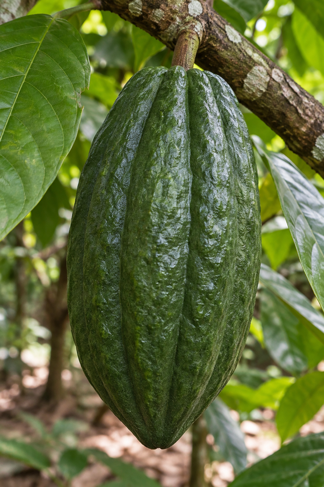

Photos analyzed
367
↑ 42 this week
Photos from the farm arrive here for screening and follow-up. Capture them on a phone; manage the queue on desktop.
In a live setup, an authorized Drive connection could process photos in place while originals stay in farm storage.
A field-first view of where to spend inspection time.

AI signals prioritize human inspection. They do not confirm disease. Sample counts and field validation status should be reviewed before action.
Review the signal, then confirm what is actually present in the field.
The highlighted block is the location for the details and photos shown below. Tap another block to switch areas.
Illustrative block layout; replace with the farm’s verified block map.
The area signal narrows the search. Select a tree to review its evidence and field history.
Labels describe model-like patterns; confirm disease and pest presence in person.
A single tree record connects the screening signal to the field decision.
The photo and result shown here are illustrative demo data. A field worker should confirm the observation before treatment.
Record what the team did so the next photo can be compared with this visit.
Compare the next visit with the previous one to see whether the field action helped.
A lower flagged share is a positive screening signal, not proof of disease resolution. Confirm the tree condition in person and keep the denominator visible.
Outcome data is illustrative demo data. Replace it with confirmed field observations and repeat photos in a live deployment.
A short list of places to revisit, with enough evidence to plan the week.
Share of photos flagged for review. Counts are small; compare with the sample size.
Current sample: 8 of 24 photos flagged. A higher share is a cue to inspect, not a disease diagnosis.
Trend is illustrative demo data. Rates can shift when capture volume or model version changes; always show the denominator and field-check before interpreting.
Review the screening signal, then confirm what is actually present in the field. This demo result is illustrative, not a live inference.